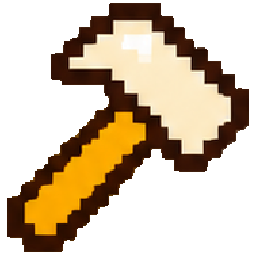
Hands-on tasks, not lectures
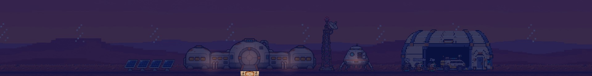
NASA Space Apps 2026·hackteamVLDK
Survive Mars. Build the base.
ChallengeBuild a Junior Astronaut Mission Trainer
Our Mission
How do we know?
Why it matters
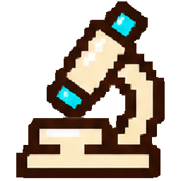
Most space games skip the science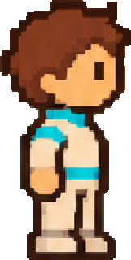
16 years
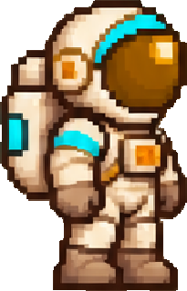
Age 8 today
Mars crew in 2042
Our Approach
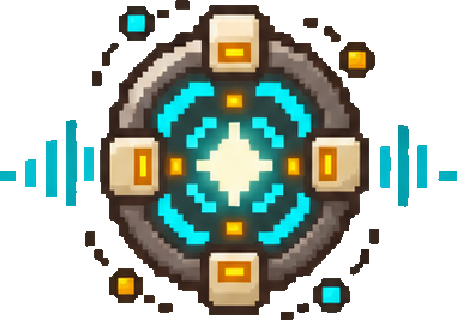
Close! Try once more.

Hands-on tasks, not lectures
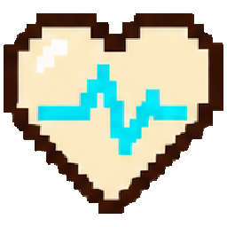
A kind guide: ASTRA
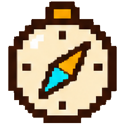
Real NASA places and missions
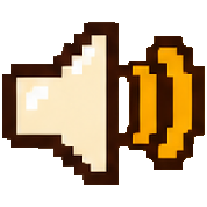
A mystery signal to follow
In the Game
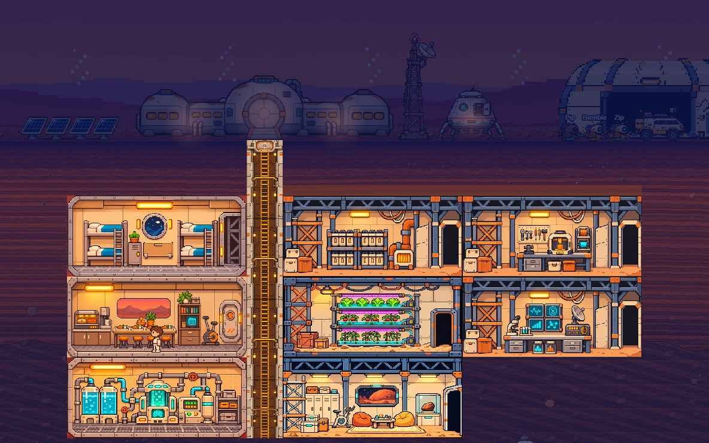
Clean the panels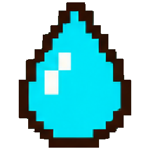
Recycle 98% of water Soil shields the rooms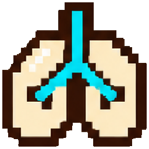
Oxygen from CO2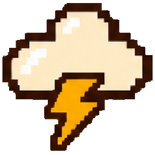
Storms cut solar powerCore Loop
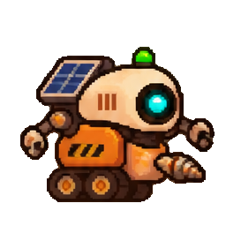
Gather resources
Manage oxygen
Build the base
Survive the dust storm
The Story
Sols 1-6
Survive the storm
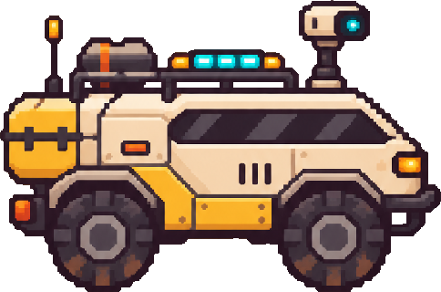
Sols 7-13
Explore with the Rover
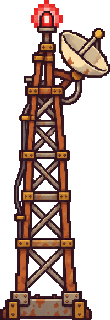
Sols 14-20
Find the source
The story is fiction. The science is real.
Our Promise
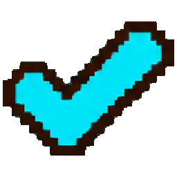
Every number labelledCome play.
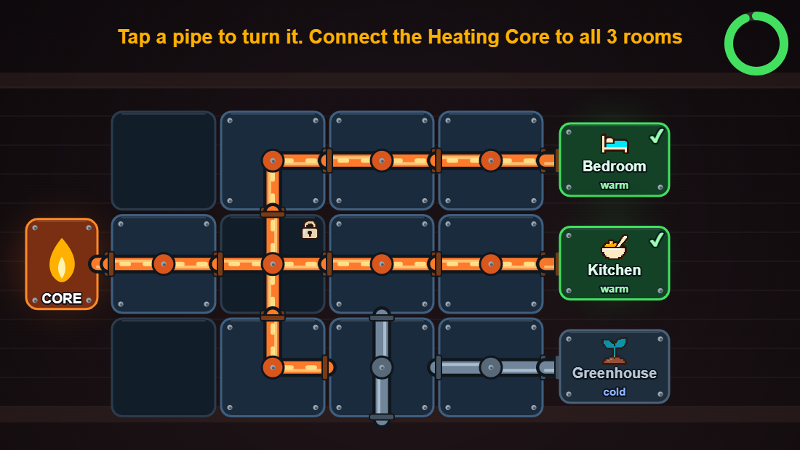
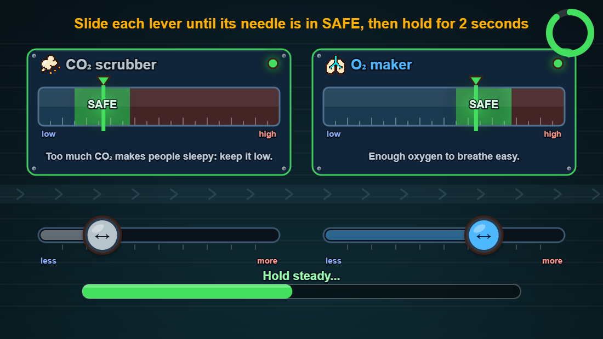
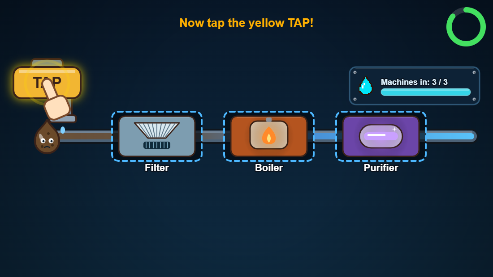
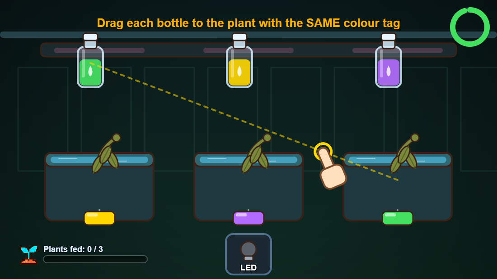
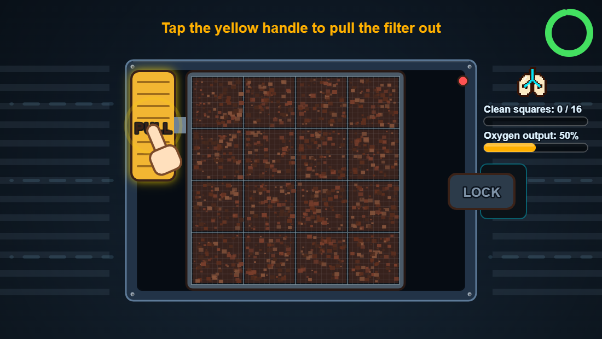
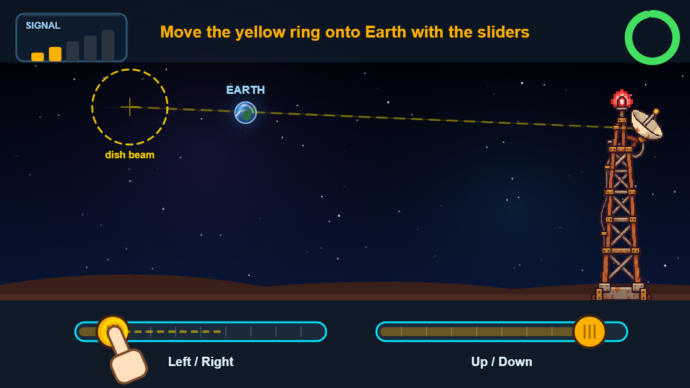
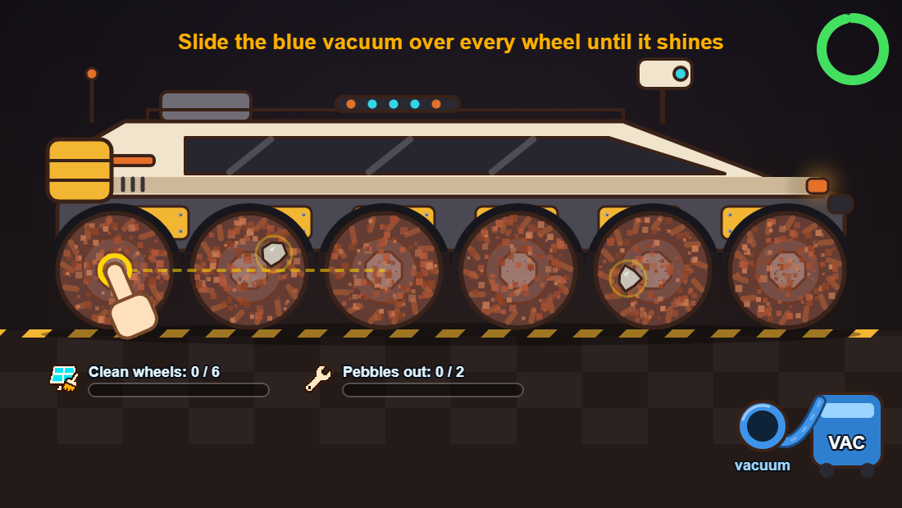
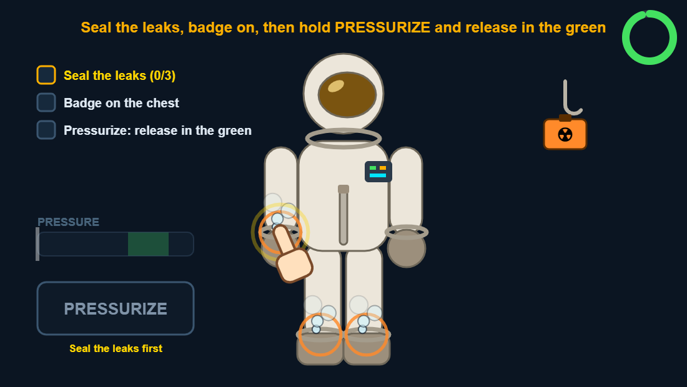
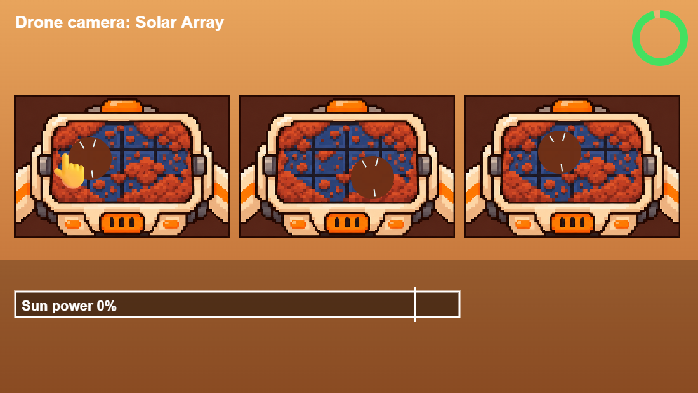
hackteamVLDK